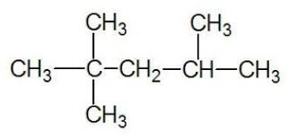
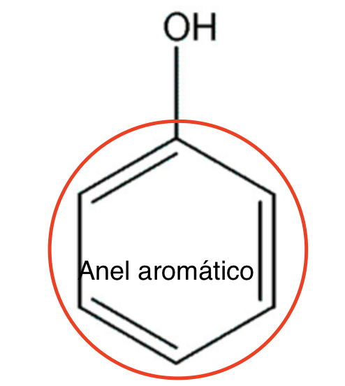

FUNÇÕES ORGÂNICAS
As funções orgânicas surgiu quando foi observado experimentalmente é que os compostos orgânicos podem ser divididos em grupos, de acordo com um conjunto de propriedades químicas que são semelhantes às propriedades de outro membro do grupo e são diferentes das propriedades das substâncias que não pertencem ao mesmo grupo.
Essas três substâncias são exemplos de compostos pertencentes à função orgânica álcool, porque todas têm um OH (hidroxila) na sua estrutura. Por causa dessa característica estrutural, existe uma série de propriedades, por exemplo: todas podem ser oxidadas pelo dicromato de potássio; todas fazem ligação hidrogênio, o que as caracteriza como pertencentes ao mesmo grupo, mas são compostos completamente diferentes.
Observa-se que as propriedades químicas (e algumas físicas) dos compostos orgânicos são devidas à presença ou ausência, em sua molécula, de um determinado grupo funcional: conjunto de um ou mais átomos ligados de uma determinada maneira. Por exemplo, substâncias que contém apenas carbono e hidrogênio em sua estrutura são muito pouco ácidas (acidez baixa). Se, entretanto, um dos hidrogênios for substituído por OH, a acidez aumenta consideravelmente. Podemos, então, definir o OH como um grupo funcional.
HIDROCARBONETOS
É quando temos uma molécula apenas com átomos de hidrogênio e carbono unidos tetraedricamente na maiorias das vezes em ligação covalente, todos os compostos que têm essas características são denominados hidrocarbonetos.

ÁLCOOL
É toda substância que contém um ou mais grupos de hidroxila(OH) ligado predominantemente a átomos de carbono saturado.
ENOL
Os Enóis têm a mesma estrutura que os álcoois, porém sua hidroxila(OH) está ligada a um carbono insaturado.
FENOL
O fenol é uma das funções orgânicas mais fáceis de se reconhecer, e sua estrutura essencial é composta por uma ou mais hidroxilas ligadas a um anel aromático.

ÉTER
Éteres são usados como solventes de óleos, gorduras, resinas e na fabricação de seda artificial. Em sua fórmula encontramos como característica principal uma molécula de carbono entre duas moléculas de carbono.

CETONA
A cetona mais comum é a propanona, mais conhecida como acetona. Ela é usada como solvente de esmaltes, graxas, vernizes e resinas. O grupo funcional dela é a carbonila também conhecido como " C dupla O ".
ALDEÍDO
Os aldeídos são utilizados na fabricação de desinfetantes e plásticos. Ademais, é importante no desenvolvimento de estudos científicos, uma vez que serve para conservação de cadáveres. Com o mesmo grupo funcional que a cetona, tem como fórmula geral R-CHO na qual R é um radical alquila ou arila.
ÁCIDO CARBOXÍLICO
Bem o grupo funcional do ácido carboxílico é um tanto complicado pois ele tem a hidroxila e a carbonila, por esse motivo é uma das funções mais cobradas em vestibulares.